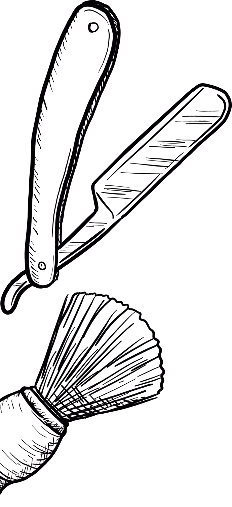

Se você chegou até aqui, é porque quer fazer a diferença.
Vocês pediram e nós atendemos! É com imenso prazer que lhe apresentamos o The Barber. Uma barbearia avançado para todos aquelas pessoas que desejam um belo visual e buscam um bom aperfeiçoamento nas tendências de corte e estilo a excelência e o profissionalismo que empregamos em nossos trabalhos desde 2019.
Nosso time:
Com uma equipe de Barbeiros composta de profissionais especializados, o The Barber trará módulos de aperfeiçoamento de acordo com a necessidade que os nossos clientes pedem. Não vai faltar conteúdo bom por aqui, pois fazer um bom degradê não define um bom profissional, concordam?